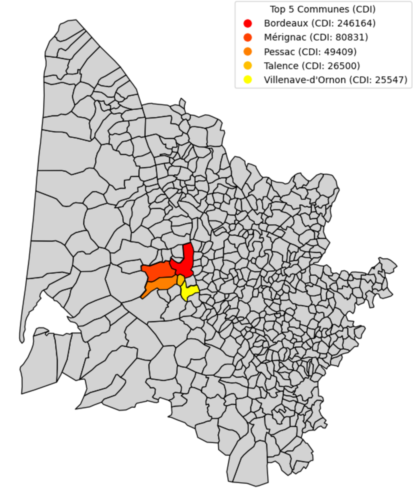

Relevez les Défis des Transitions Économiques
Le marché du travail évolue rapidement. Découvrez comment Bordeaux anticipe les métiers et compétences de demain pour relever les enjeux des transitions sociales et écologiques.
Découvrir
Les tendances du marché de l'emploi
Cet indicateur met en lumière la répartition de l'emploi par secteurs d'activité dans deux métropoles voisines, Bordeaux et Toulouse, qui présentent des caractéristiques comparables :
- Proximité géographique :Ces deux métropoles du Sud-Ouest sont situées dans une même région économique et partagent des enjeux similaires.
- Taille de la population :Les deux villes ont une population et une densité proches, ce qui facilite les comparaisons et l’identification des spécificités locales.
- Taille économique : Bordeaux et Toulouse possèdent une taille économique relativement équivalente, mais avec des secteurs d’activité phares différents (par exemple, aéronautique à Toulouse, viticulture à Bordeaux).
Répartition des entreprise actives par secteur
Répartition des entreprise actives par secteur
Répartition des types de contrats par profession
- La répartition des types de contrats (CDI, CDD, CES, non spécifiés) permet de mettre en lumière les secteurs où la précarité de l’emploi est prédominante. Ces informations sont essentielles pour orienter les politiques publiques et soutenir les travailleurs vulnérables.
- Analyser les disparités socio-économiques : Cet indicateur contribue à détecter d’éventuelles inégalités, notamment entre les sexes, en fonction des types de contrats et des secteurs. Cela offre une base solide pour promouvoir une égalité accrue dans le monde professionnel.
- Anticiper les besoins de transition : Les données sur les contrats permettent également d’anticiper les besoins en formation et en accompagnement des salariés dans des secteurs fragiles ou en tension, pour favoriser leur résilience face aux mutations économiques.
Repartition des CDI

Cet indicateur analyse la répartition géographique des types de contrats (CDI et CDD) en Gironde, en croisant les données par sexe et par commune.
- Concentration dans l'hypercentre : Met en évidence les zones à forte attractivité économique et celles nécessitant un soutien accru.
- Disparités hommes-femmes : Permet de détecter les écarts dans l'accès aux emplois stables ou précaires.
- Précarité de l'emploi : Identifie les zones dominées par des contrats précaires pour orienter les politiques publiques et les dispositifs d'accompagnement.